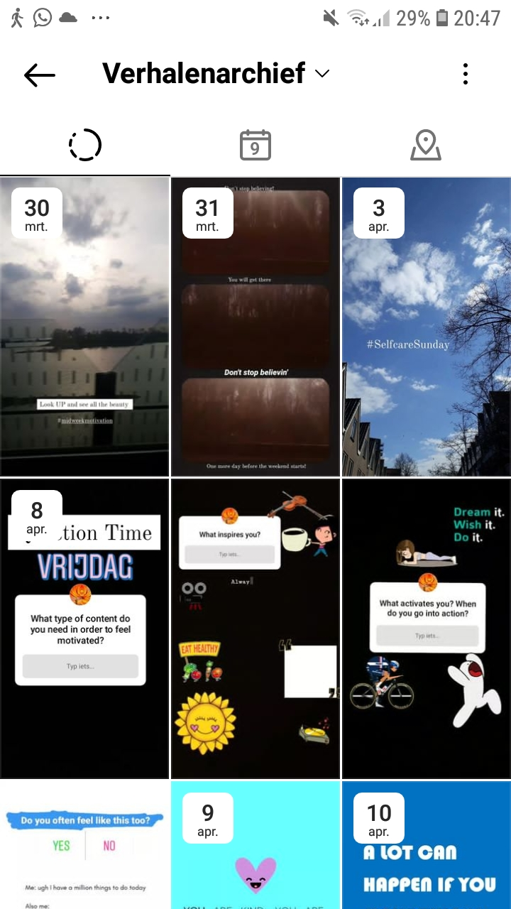
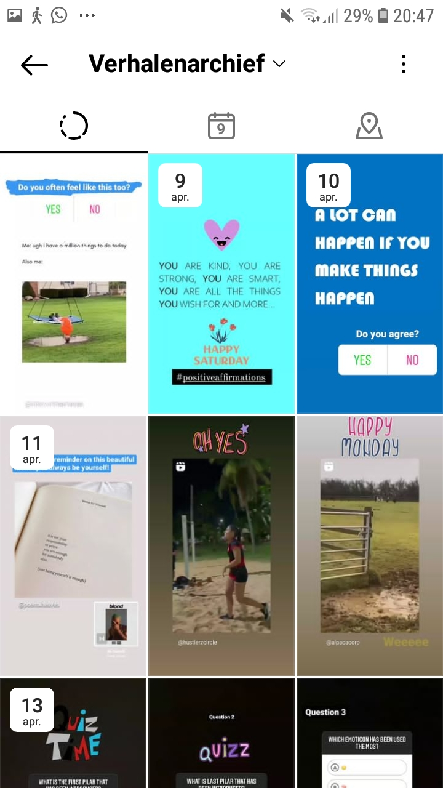
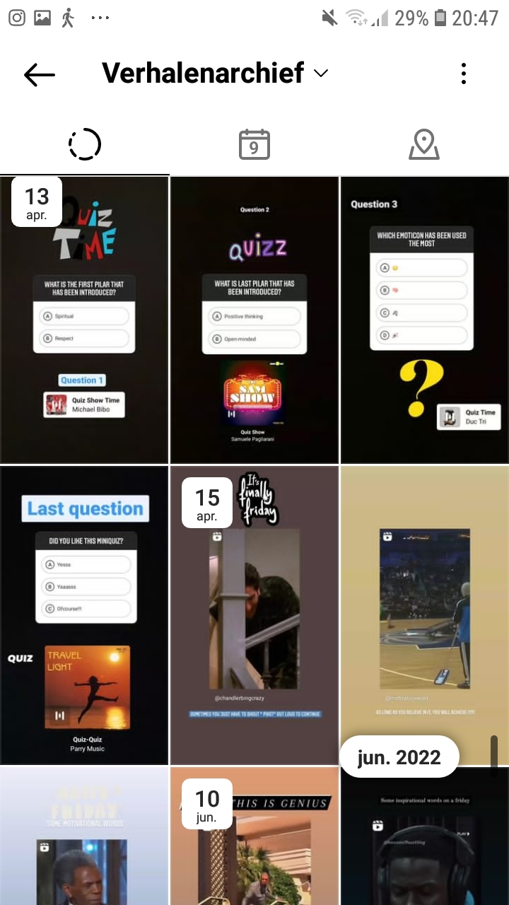
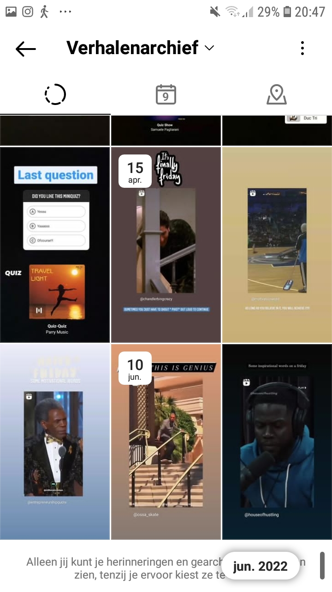
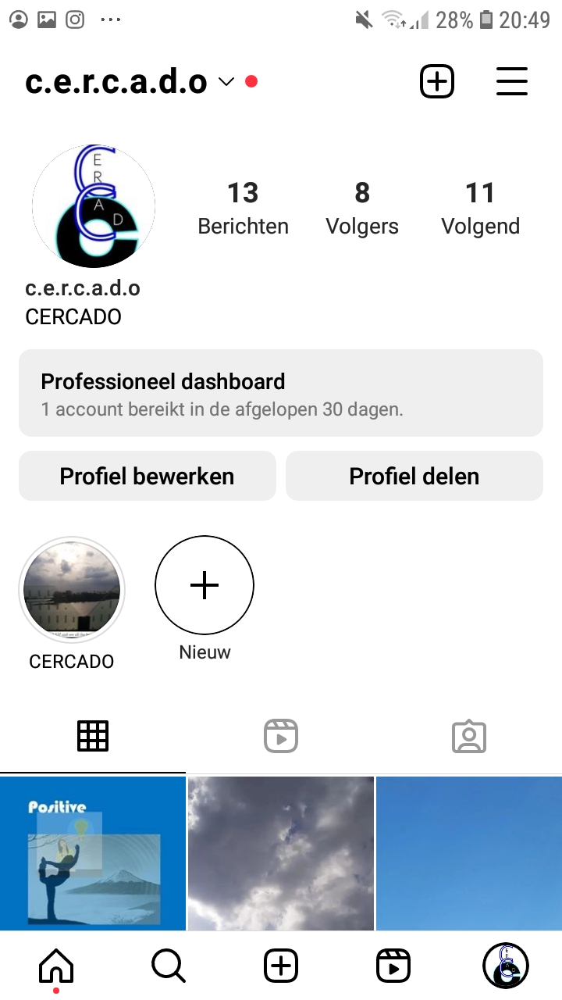
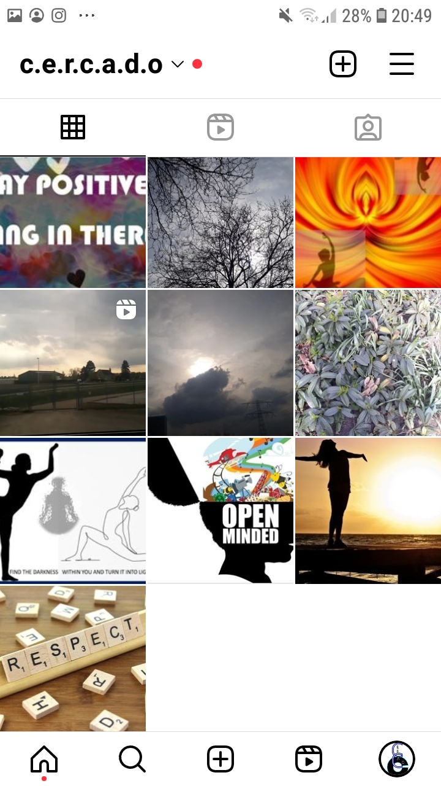

CONTEXT OF CAMPAIGN AND PROMOTIONAL ACTIVITIES
My brand Cercado consists of a combination of two words: the first word Cerca which means being close to something whilst the other word is Cerrado which is a Spanish translation of closed. With my brand I want to portray that something that is closed does not mean it cannot open again. The message and main goal of our campaign is to demonstrate and inspire others to break out of their cages figuratively speaking. There are so many different ways of achieving goals. Thinking out of the box and creating solutions whilst facing lots of obstacles isn’t easy. Therefore we want to explicitly show and encourage our customers to find their own way in doing so. Our core message & vision is the following: “In a world where positivity seems out of reach, we try to survive and live throughout the entire day, as big the obstacles might seem, every bit of light can cause a sparkle to shine and dream.”
Furthermore I chose to make use of two social media platforms to promote my brand. I used Instagram and Facebook. There are multiple reasons why chose these platforms but the most important reason for me to use Instagram for example is that it is a well-known platform that is frequently used by my target audience. My target audience consists of females in the age range of 18-24 and live a busy city life and they get easily discouraged after setbacks. They value contact, meaningful conversations and lighthearted funny memes and videos. They love to see positive affirmations and their hearts light up when seeing beautiful natural wonders such as the skies and flowers. Instagram is a frequently used and mentioned social media platform and a must for my brand. Furthermore Instagram is also a platform that constantly changes and innovates, it is an attractive tool to promote your brand. As mentioned before in my media and communication plan “ Hootsuite indicates that 1 in 2 people uses Instagram to discover latest brands and 57% loves to see quizzes and polls that brands provide on Instagram. (McLachlan, 2022)”. I also chose to make use of Facebook because in my media and communication plan I also saw that different sources stated that Facebook is a popular platform. “Vox states that Instagram users spend around 53 minutes per day on Instagram while Facebook users spend 5 minutes more, around 58 minutes per day on Facebook. (Wagner, 2018) “
I have changed the following objectives throughout my project a bit to make sure that they were measurable. However not everything is as measurable as I thought. It is hard to find out how my target audience have been feeling when seeing my posts and stories.
LEARNING POINTS
Looking back at my Communication & Media plan I realized that I have made lots of mistakes that could have been prevented and calculated from the beginning. I should have taken the current trends and activities more in account as well. For example when I look at my objectives. I see that I have formulated that as a response objective for Instagram I should have 100 likes in total, but in reality I only received 47 likes in total on all my posts combined. For Facebook I would have preferred to achieve 50 likes on my page, whereas in reality I have only achieved an amount of 3 likes(hearts) since on Facebook you can choose an emoji to like a post. Most importantly from a marketing point of view I should have taken my persona more into account and I should have posted more accurate content in order to achieve the mentioned objectives. When it comes to my reach objectives as stated above I wanted to have 20 viewers on my Instagram and 10 viewers on my Facebook, whilst both objectives have not been accomplished. I was not that far off and the use of more hashtags and lighthearted content would have helped accomplishing the viewers. Furthermore I should have used more hashtags to attract people. I made use of hashtags but not nearly enough. So this is a huge learning point for me and definitely something to note down and keep in mind. Furthermore I wanted to create a community feeling on my Facebook page hence the name Cercado community. However I didn’t get much responses, nor likes nor input. To create a safe sharing space and community I also should have explained more about the rules and the concept. Next to that I could have posted a lot more and I had to add personal anecdotes as well. Next to that I have not looked enough at the current trends for example Instagram has become a reels based platform whereas I only posted 1 reel. I could have made more use of creating and putting out reels on my account. Lastly I also want to address that I made a few style changes. I created new cards with the core pillars of my brand, but instead of posting all of the cards in the same style. I only did this on Facebook, but since I already posted on Instagram in different styles I did not change or repost them. Maybe I should have to stay as consistent as possible.
FUTURE PLANNING
- 1. By the 15th of July I want to reach 25 viewers on Instagram and 5 viewers on Facebook
- 2. I want my target audience to feel inspired and motivated.
CONTENT CALENDER FACEBOOK AND INSTAGRAM
| Day | What | Platform |
|---|---|---|
| Saturday 10-06-2023 | Explanation of the rules to create a safe community | |
| Saturday 10-06-2023 | Reintroducing the new brand cards + 1 reel that describes/matches the brand value (number 1/Spiritual) | |
| Sunday 11-06-2023 | Inspirational and personal anecdote (Facebook)Reintroducing the new brand cards on Instagram + 1 reel that describes/matches the brand value | Facebook & Instagram |
| Monday 12-06-2023 | Funny videos and memes (stories instagram) | |
| Tuesday 13-06-2023 | Personal story and funny anecdote | |
| Tuesday 13-06-2023 | Reintroducing another brand card + 1 reel that describes/matches the brand value | |
| Wednesday 14-06-2023 | Reintroducing the last brand card + 1 reel that describes/matches the brand value | |
| Wednesday 14-06-2023 | Funny video + information on how to think out of the box | |
| Thursday 15-06-2023 | 1 reel on instagram (recap of all the brand values) Introducing all of the cards on Facebook with a short message for every brand value card. + 3 stories on Instagram (mini-quiz) about the brand values | Instagram & Facebook |
PROFFESIONALISM
Instagram Screenshots






Facebook Screenshots